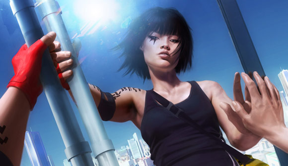
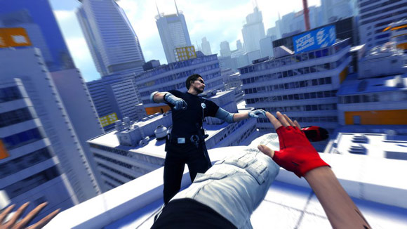
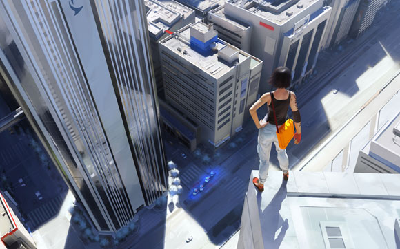

A Mirror's Edge Interview
The upcoming Mirror's Edge is one of the most original-looking titles to come out of the new-style quality-driven Electronic Arts since the company's creative realignment is announced. It was developed by its DICE studio in Sweden, which is best (and, at this juncture, almost exclusively) known for its Battlefield series of shooters.
What drove the creative philosophy of this game? The visuals and gameplay are a departure from the grittiness and combat-focused world of those games.
In this in-depth interview, producer Nick Channon spells out the inspiration for these decisions, outlining some of the methodology -- as well as the thinking behind the approach the game ultimately ended up with.
So, the most obvious, interesting choice about this game is that it's first person. There are a few free running- or parkour-inspired games out right now, but as far as I'm aware, this is the only one that's first person; how did you guys end up with that?
NC: Well I think at DICE we've done a lot of first person work, and so that kind of inspired us to create [this] -- we wanted to create something quite urban, and we wanted to create a game that was all about movement.
I think the other thing was, as well, that we really wanted to create a connection with you and the character, and the fact that you're playing the game through the eyes of Faith; as soon as you get to third person, you would be watching Faith, whereas we want you to be connected to her.
The analogy we give is "being in an action movie, instead of playing it", and I think that's more rewarding. And I think, also, we wanted to create something very fresh, and it's been a challenge, but we're really pleased with where we are.
I love the idea of using first person not as a genre, but simply as a design choice.
NC: Absolutely. And I think it makes the game feel very different, as you saw when you played it. That flow, and that momentum, that's what it's all about; it's so rewarding when you do it.

You mentioned the idea of wanting to see the world through the character's eyes; a lot of people have said you relate more to the character in third person, because you see more of their animations and motions. What are your thoughts on that?
NC: Well, I think that's what people are used to. That's what we've seen, and I think we wanted to make something that's different. You make, actually, more connection when you're controlling them in that first person, we feel.
We think it's really cool, the way you get glimpses of Faith in the game world: You see her in reflections, you see her in shadow, and I think that gives a really nice feel to the game. Obviously, in the storytelling we do, you see Faith, but we actually show her in a different way, so it's 2D, more cartoon animation.
And again, that was another thing that was very important to us, that we wanted to really have that transition so that people would look at the storytelling. The story is very important to us; it's very compelling. It's written by Rhianna Pratchett, who is Terry Pratchett's daughter.
And it's a really nice style change, to go from the first person perspective to a third person cartoon, and we feel that that will really get people's attention, and they'll really want to know about the story, and how it unfolds.
And how did you end up with Rhianna Pratchett writing your story?
NC: She had worked on Heavenly Sword, previously, and we just really wanted to ground everything in cool fiction; give it a real meaning for Faith, for being in the world, and what she does.
And, obviously, I described to you how the city has changed, and why [Faith is] a runner, and the importance of that. I think any movie or any game needs a good grounding, and it gives everything a reason, and just makes the whole package much stronger.
You were saying that the cutscenes are not in the engine.
NC: Yeah, absolutely. So, it's basically sort-of a 2D animated sequence -- cartoon animated, that's the easiest way to describe it. We released the trailers actually on the internet -- and again, it was to give a contrast.
The game is a lot about contrast, you know, contrast in the different levels, and it was really to make them stand out. We wanted people to take notice; we wanted people to look at the story, and understand the story, because that's very important to us. We feel that you have a much stronger experience if you understand why, as you progress, and things change, and there are twists and turns.
So do you see the actual character model largely only through reflections, and things like that?
NC: Yeah, yeah, absolutely. And I think that's really cool, you know; gives it a mystique. It makes Faith -- you know, I think if you're constantly looking at [characters], you just switch off to them, almost, and when you get that into Faith, it's like, "Oh, this is really cool." You see the shadow, as well, there's a connection with the shadow, and I just think that really adds to the allure of the game.
That's almost a Valve kind of thing.
NC: Yeah. Absolutely. And I think that it's something we were -- certainly personally, I think, gives it its uniqueness, and it's really cool. When you see Faith, it's like, "Wow, that's really cool. I've just seen her. I've seen her reflection," and, you know, I think it just adds to it.

The first person perspective, puts a really explicit focus on your surroundings, and on the very stark art design. You guys have a very specific art design going on.
NC: Yeah. And that's specifically because that's how she sees the world; it's that the game is played out through her eyes. When you're on the rooftops, that's how she sees the city now. It feels like a very cold, austere place to her; it's lost its vibrancy that it once had, through the control. And that's how we make that connection.
We knew we wanted the levels to feel very different, so when you go from a change -- like the storm drains that you may have seen, to the factories, and you go down through buildings, and then down to street level, they all have an identity. A real contrast. And again, that was really important, that you're constantly seeing different things, and it feels different.
The color design almost feels somewhat impressionistic -- the color is so sparse, but then there's a bright splash of red or yellow. What's the thinking there?
NC: Right. Yeah, so the red itself is what we call "runner vision". Faith sees the world differently; because she's become so adept at what she does, she sees objects in the world as aids, if you like; things to help her.
I think if you look at parkour, what we see as some stairs or something, we'll just see them to walk down, and they'll see them as something to jump down or to run across.
It's the same sort of feeling -- that the red elements, and the runner vision, are elements that she feels that she can use to her advantage as she runs through the levels. And, obviously, it plays out really as helpful hints and tips to the user as they play through the game.
How early on did you decide on the look of the game?
NC: It was early on. We wanted to make a statement in the fact that the game felt very different, and very unique. When you see a screenshot of Mirror's Edge, you know it's Mirror's Edge. It just doesn't become another first person game.
There are a lot of great games out there, but sometimes it's difficult to distinguish between them and us. That was a statement that we wanted to make very early on, and we've really tried to do that throughout the game. "How can we make this very different?"
How much has the game turned out to be the original pitch and design concept, or evolved into something by necessity?
NC: I think the greatest thing in what we did is that we spent a lot of time in white box, that we really proved out what we were doing, very early. The levels were then built out from that. I think had we built a level and then built mechanics around that, we probably would be in a very different situation today than when we started.
I think the whole concept was to build a game around movement, and that's still the same. We've created so many different mechanics, with puzzling, exploration, speed. Also, then, we have these chase mechanics, where you're being chased down by the cops, and you're really trying to get away, and then there's obviously combat, as well.
So we really wanted to build that variety. All the levels have that beat to them, where it's changing the mechanics that you enjoy.
But I think, coming back to your question, that the game has really been true to what we set out to do, and that's really because we proved out the basics early on.
Did you have to adjust your designers and development teams? It's pretty different from your past games; not only in the fact that it's not really a shooter, but also in that most of your past games have been multiplayer.
NC: Yeah. And I think that's a good challenge for us; that was something that we wanted to do, and I think it's great for everyone on the team to do something very different. So, yeah, we've learned a lot.
You know, none of us would claim that it's been easy. It's hard making something like this. It's hard doing new IP; there are challenges along the way, completely. So we've learned a lot which will help us, but I come back to the same point, which is: we were very specific at the beginning to get the specifics right, and that's the one thing that we've learned. That's the best thing that we did, to focus on that, and build a game around the core mechanics.
This is a pretty open question: Is there anything that you did carry from your past games, in terms of things you learned from designing the Battlefield series?
NC: I think it's just looking at what you've got, looking at where your strengths are in your game, and in your mechanics, and building the levels out around it. And the fact that we could've gone open world, we could've made a game that felt very open, but we went for a more linear story, and we went for a more level-based game -- and the reason for that was that we wanted to pack as much action in as we could.
As soon as we'd have gone open world, I think that would've watered it down. So I think that was one learning, in the fact that a lot of people think, nowadays, that open world's the way to go, and it's the next-gen thing -- I don't think I believe it is.
It's clearly right for some games, absolutely, but you can actually get a lot more in, at times, in more of a level-based [game].
You have to give a choice; it can't be just, "Do this, do this," you know. And that's what we've done: We've built every level out to have lots of choice, and I think the thing that we're really pleased about is that, actually, the amount of choice in every level is just limited to your imagination. Which really plays in the movement, and the parkour elements that we talked about.
Obviously the mechanics are completely different, but what you just said, structurally, almost reminds me of Portal.
NC: Yeah. We've taken inspirations from certain games, but again, we try to be very unique, and we try to really keep Mirror's Edge as Mirror's Edge. People have compared it to Assassin's Creed, but we were well into development before that game came out.
So I think that's the thing: that we try to create a unique style, and something very different, so while there may be elements that make you think, "Well, that was cool," we've really tried to blaze the trail.
I'm interested in the idea of games that are not explicitly combat-oriented, but are still first person. How much did you have to tweak mechanics to ensure they were still fun without relying on guns and things that people are going to expect?
NC: The core mechanics are fairly straightforward; it was then building out the levels, so that the levels had variety in them. You know, the other thing, without going into details about this, but the replayability aspects of the game, that was really important, and we've done a lot of stuff there to really want to come back and play the levels again.
That was really important to us, that you come back and play; find out the best routes and you will be rewarded for that. So there's variety in the levels -- combat is still a part of the game, but it's just not all of it.
But we'll also reward you for not actually engaging an enemy; there's actually an achievement in the game, to finish it without engaging in combat. And I think that's a cool, different take on a first person game.

I imagine that with a first person perspective, it would be much easier to say, "Well, we can have the character do this crazy move," since you don't need to worry about the character animation as much as you would in third-person -- but on the other hand, you have to worry about it being disorienting. Did you find that you had to whittle down the elements until you got to the ones that were really key?
NC: Yeah, totally. And that was in that white box process, getting the basics. And it's really... It's keeping everything simple. I think a lot of games will put in just amazing moves for the sake of it; for us it's just keeping it simple.
It's a simple jump, it's context sensitive, so it's really easy to pick up, but it's the combinations that you use them in, it's the way that you use them, it's the way that you interact with them in the environment and in the levels, that makes them so important.
You haven't got seven hundred different moves to do, you've just got the basic controls, and it's how you use them. The only limit to this game is your imagination and this girl.
I was really surprised that I used literally three buttons the entire time I played the demo.
NC: That's right, and I don't think it feels -- it never feels repetitive in that sense, because you want to maintain that momentum. It's all about keeping the momentum, which is like the fuel that drives you through the game; that's the most important part. And that's the challenge, you know?
It's almost like, in sports, if the challenge is to go faster -- if you're running, the challenge is to do it as fast as you can, and that's what drives you forward to keep doing it.
There's a similar sense in our game in that, you know, I want to go through the levels as quickly and as cleanly as I can, and there's a real sense of achievement for that.
You don't have to have lots of different moves to do that, you just have to have skill, and the skill comes to a point where you're really getting through these levels clean, and it's massively rewarding.
That's one of the things I really like about platforming games, and I don't think there are a lot of outstanding examples of it these days, unfortunately. If you look at Mario, you jump, and maybe do a couple other things. And then even, again, Portal, you've got two types of portals, and you move around, and that's it. It's amazing how much variety of design you can get within that framework.
NC: Absolutely. And it comes out in the levels, you know? In the level design, and the way they're put together, and, you know, platform games obviously were huge on the older consoles, and I think it's a shame that they've not been used more.
And clearly we're trying to bring a lot of that back, because they're still fun, they're still really fun; back in the day, they were the games, and that was the genre.
Right. It's strange that part of the resurgence is coming via first person.
NC: It is. I mean, obviously, when you look at the previous games, that's completely not the case, it was far from it. Side-on, and stuff.
But I think that's what the new generation of games is all about; it's to try and break down those barriers, to try and do these things; we can technically do it, but it's just about having some imagination and taking the time to get that right. You know, that's really all you're limited by -- instead of copying things that other games do, it's actually taking time to try to do something different.

It almost feels like, as the '90s progressed, genres became more and more codified; they were established in the '80s and mid '90s, and then they got more and more rigid. And I feel like the last generation of consoles was very much like that -- people established genres, and it was a matter of, "Let's lock that down," and now it almost feels more like, "Well, maybe we'll just use some of these design building blocks."
NC: Yeah. Yeah. Exactly. It's just using your imagination, you know, and I think that's the main thing: Try and -- you can't always make something different just for the sake of it, but try and be creative, and do something unique. I think that's what gaming's all about; I think that's what we're here to do.
And I think at times it's great to mimic real life -- there's no bigger fan of sports games than myself, and I want them to be real, clearly. I don't want them to play different; if I'm going to play football, I want to play football. I want to play it as it is, you know? It's great for me; I love that. But, in the other genres, I think in certain circumstances, there's a real gap to be unique, and be different, and be creative.